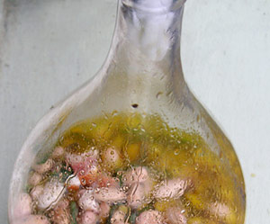

Fagioli al fiasco
5,5 von 6350 g canellini (weisse kleine bohnen) am vortag einweichen. eine 1,5 liter chianti flasche vom stroh befreien und reinigen. 2 knoblauchzehen, eine kleine chilli, frischer thymian, 1 dl olivenöl in die flasche einfüllen. mit wasser auffüllen bis die bohnen bedeckt sind, mit einem tuch verschliessen. bei 120 grad 3 stunden sanft garen. ev. mit rohschinken servieren.
